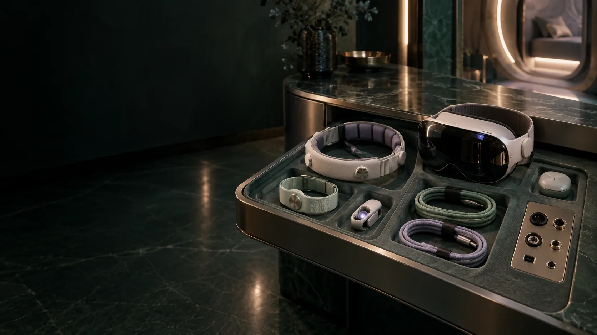

SENSING / CONTINUITY AND BODY ASSESSMENT
Observe with context.
The protocol combines installed session streams with separately agreed external assessment. A measurement keeps its instrument, units, timing, quality and purpose.
Capture is bounded by the session.
The design specifies continuous camera and microphone recording during Geode/HBOT Genesis, including quiet and rest. Installed sensors acquire at their configured rates. Session start and stop receipts, physical removal, hardware faults and emergency egress produce explicit continuity states.
An active self-reflection workspace.
The current project brief reserves usable space for haptic touchscreens or VR/XR interaction, alongside the participant and their wearable sensors. The seated person needs to reach the interface, move comfortably and review their own records. Guided rest is one part of the protocol; the layout also supports deliberate interaction, reflection and learning.
- A reachable adjustable display and a defined VR/XR use envelope, with a headset dock beside the seat.
- A serviceable sensor connection bay, cable management and provision for a compatible wireless receiver where selected.
- Screens and accessories stow alongside the seat, keeping the entry, assisted-transfer route and door operation clear.
- The complete equipment configuration requires review for the actual chamber environment; experience interfaces remain separate from independent chamber controls.
A sensor register precedes a dashboard.
Candidate groups cover breathing, circulation, skin, brain activity, eyes, face, voice, movement, posture and the environment. Acquisition bands in the source are proposed planning values. The selected device needs model, serial number, placement, calibration, synchronisation and its actual compatibility review.
- Breath and heartbeat · validated detection before derived intervals and spectra.
- Electroencephalography · fit, channel quality, artefacts and analysis version.
- Gaze and expression · lighting, occlusion, tracking loss and participant meaning.
- Environment · pressure, gas conditions, light, sound, vibration and instrument bandwidth.
Body real estate is a whole arrangement.
Mask, seating, posture, clothing, leads, displays and access needs affect one another. A sensor position is considered in that complete arrangement. Emergency removal and supported exit are rehearsed within the site’s procedures.
External assessment has its own appointment.
Biological samples, imaging, ultrasound or functional tests start with a defined question. Clinical and exploratory assays have different interpretation and communication routes. A specimen retains collection, handling, laboratory, quality-control and permission records.
A quiet signal may carry a large meaning.
Feature selection reduces processing workload while preserving the full acquired session archive in the design. A statistically intense interval may be irrelevant to the person’s chosen question; a quiet sentence may change an entire interpretation.